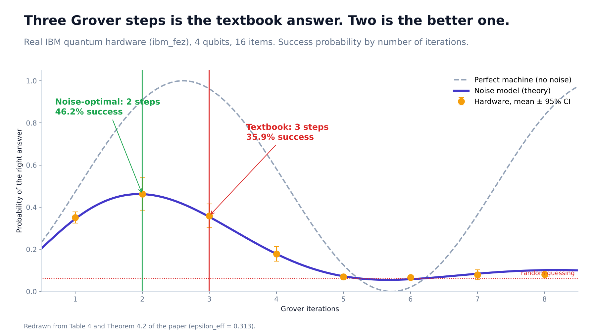
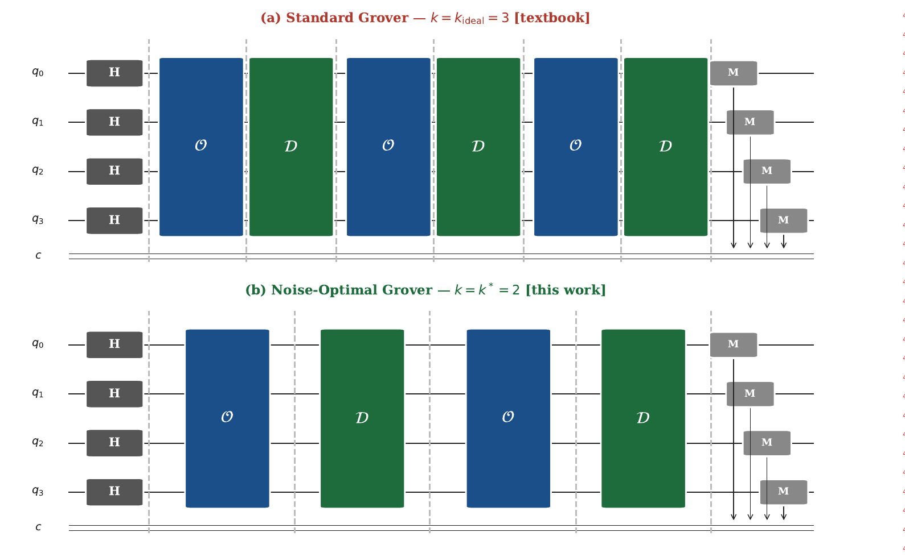
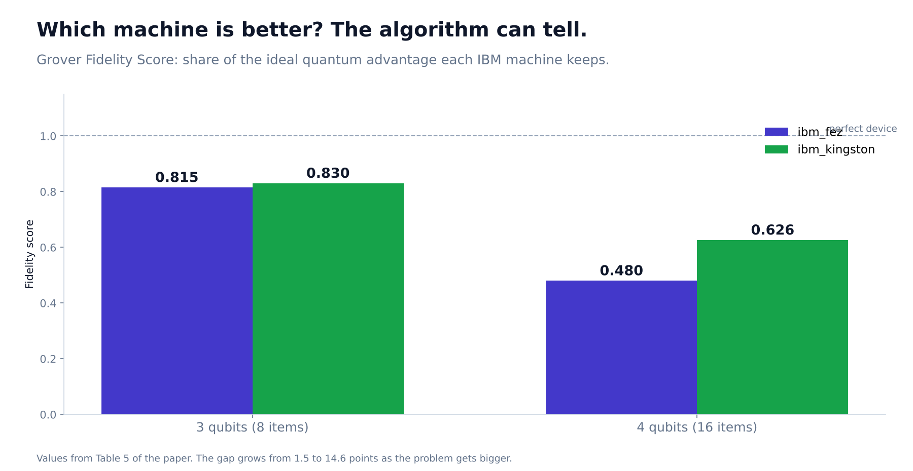

The textbook says run it three times. On a real quantum computer, twice works 28% better.
What I learned running Grover's algorithm on two 156-qubit IBM machines, and the small formula that predicts when to stop.

Every quantum computing course teaches the same promise: Grover's algorithm finds a needle in an unsorted haystack in far fewer steps than any normal computer. Search 16 items and the textbook says to repeat the algorithm's core step exactly three times.
I ran it on a real IBM quantum computer. Three repeats gave the right answer 35.9% of the time. Two repeats gave it 46.2% of the time. Doing less work was about 28% better.
That gap is what my paper is about.
Why more steps can make things worse
Think of each Grover step as turning up the volume on the correct answer. In a perfect machine, every step makes it louder until you hit the ideal count, and the textbook formula tells you where that is.
Real quantum hardware is noisy. Every operation adds a little static, and static piles up with every step. Early on, the signal grows faster than the static. Later the static wins, and extra steps make the answer quieter. The textbook formula knows nothing about this, because it assumes a perfect machine.
So the real question is: given your machine's noise, when should you stop?

What I did
I derived the answer as a formal theorem. The noise-optimal number of steps, which I call k*, is always strictly smaller than the textbook number whenever there is any noise at all. As the noise goes to zero, the two agree. I also found a closed-form approximation that matches the exact numerical answer within 2.4%.
Then I tested it on two IBM Heron r2 processors, ibm_fez and ibm_kingston, with more than 200 circuit runs, each repeated over several seeds and reported with bootstrap confidence intervals.
For the 4-qubit search on ibm_fez:
| Textbook (3 steps) | Noise-optimal (2 steps) | |
|---|---|---|
| Chance of the right answer | 35.9% | 46.2% |
| Gates after IBM's compiler | 1,265 | 843 |
| Accumulated noise | 31.3% | 22.2% |
Two steps meant a third fewer gates and the circuit was both cheaper and better.
On the sweep, the hardware curve also showed something the textbook never would: at 4 steps the success rate collapses to 17.8%, and by 5 steps it is 6.9%, barely above random guessing at 6.25%. The theory's curve tracked these numbers closely.
The part I like most: the algorithm measures its own noise
To apply the formula you need to know your device's noise. The usual way is to run many extra calibration circuits. My second contribution avoids that. The success-rate curve of Grover itself has a shape that depends on the noise, so fitting the curve from the runs you were already doing reveals the noise for free. I call this Grover Noise Fingerprinting.
A useful sanity check: I fingerprinted ibm_fez with a 3-qubit circuit (409 gates) and a 4-qubit circuit (1,265 gates). The two circuits are very different in depth, yet they gave the same per-gate noise, 2.94 and 2.97 parts in ten thousand, within each other's confidence intervals.
A report card for quantum machines
Third, I defined the Grover Fidelity Score: how much of the ideal Grover advantage a machine keeps when run at its best stopping point. A score of 0.815 means 81.5% of the ideal.
ibm_kingston scored higher than ibm_fez at both sizes (0.830 vs 0.815 on 3 qubits, 0.626 vs 0.480 on 4 qubits), and the gap widened as the problem grew. That ranking matches IBM's own published error rates, even though my method never looked at them.
What I would not claim
- I tested only 3 and 4 qubits, and the 4-qubit case sits at the edge of the theory's low-noise assumption. I call it practical validation, not proof.
- The noise model is simplified (depolarizing noise, a single marked item).
- My per-gate noise estimate is about 100 times smaller than IBM's headline two-qubit error. That is expected, because I average over hundreds of gates, most of them cheaper single-qubit gates, but it means my number is a fingerprint for ranking and stopping, not a replacement for IBM's calibration.

The takeaway
On today's noisy machines, "the optimal algorithm" is not the one in the textbook. It is the textbook algorithm run for fewer steps, with the stopping point set by the hardware you have.
Code and data: github.com/Davuri124/Grover-Algorithm-on-NISQ-devices